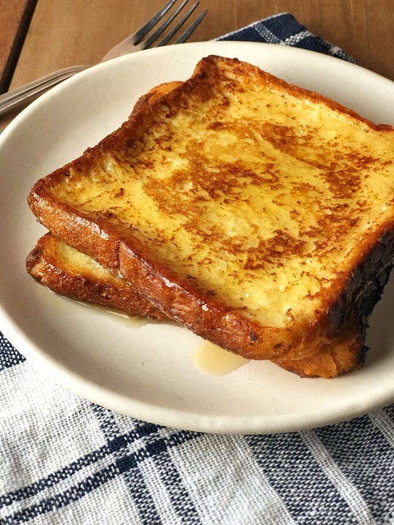

French Toast Recipe
Description
There are many, fancy variations on this basic recipe. This easy recipe works with
many types of bread – white, whole wheat, brioche, cinnamon-raisin, Italian, or French.
Serve hot with butter or margarine and maple syrup.
Ingredients
- ⅔ cup milk
- 2 large eggs
- 1 teaspoon vanilla extract (Optional)
- ¼ teaspoon ground cinnamon (Optional)
- salt
- 6 thick slices bread
- 1 tablespoon unsalted butter, or more as needed
Steps
- Whisk milk, eggs, vanilla, cinnamon, and salt together in a shallow bowl.
- Lightly butter a griddle and heat over medium-high heat.
- Dunk bread in the egg mixture, soaking both sides. Transfer to the hot skillet and
cook until golden, 3 to 4 minutes per side. Serve hot.
This recipe is from here.
Click here to go back to the Homepage!